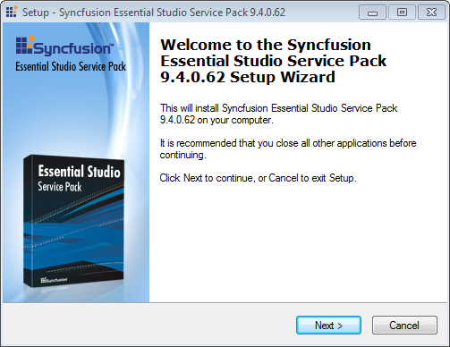
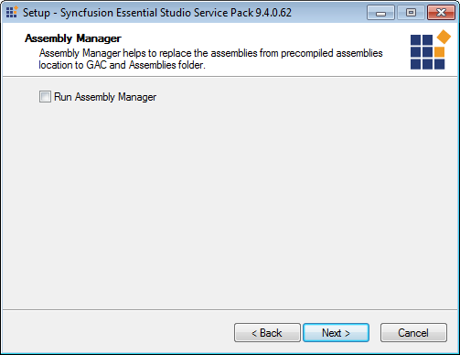
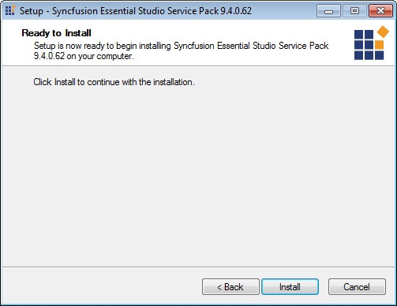
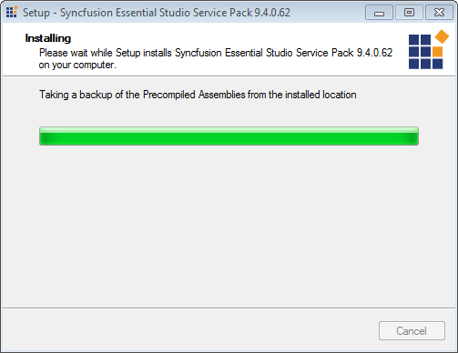
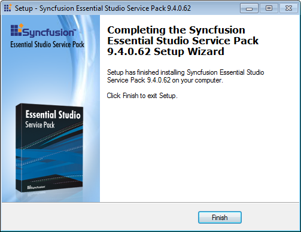

The following procedure illustrates how to install a patch:
 Note: Before installing the patch ensure that the
Essential Studio version corresponding to the patch is installed on your
machine.
Note: Before installing the patch ensure that the
Essential Studio version corresponding to the patch is installed on your
machine.
1. Double-click the Syncfusion Essential Studio patch setup file. The Syncfusion Essential Studio Service Pack opens.

Figure 37: Unified Installer
2. Click Next. The Assembly Manager opens.

Figure 38: Assemble Manager Screen
3. Select the Run Assembly Manager check box, to install the assemblies in GAC.
4. Click Next. Ready To Install dialog will open.

Figure 39: Ready to Install
5. Click Install, to continue installing.

Figure 40: Installing
Note: The patch will be installed on your
computer, and you will be informed with a dialog box when the installation is
completed.

Figure 41: Installation Completed
6. Click Finish.
The new assemblies will be places in the Pre-Compiled Assemblies folder. These new assemblies can be referenced in your project.